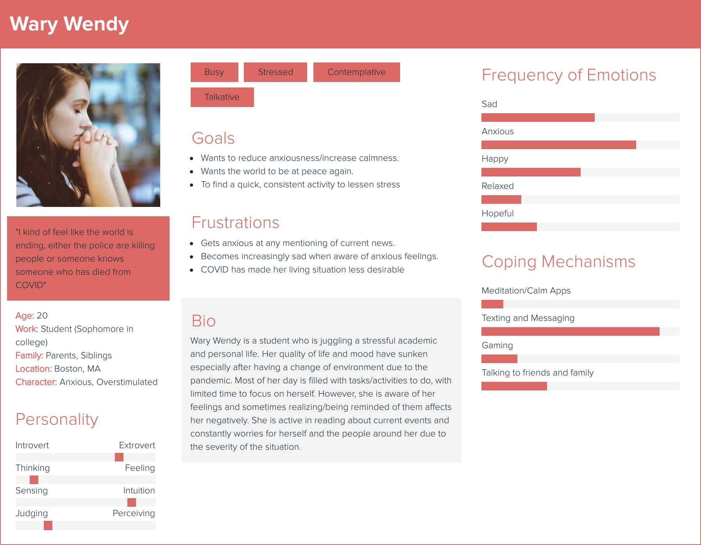
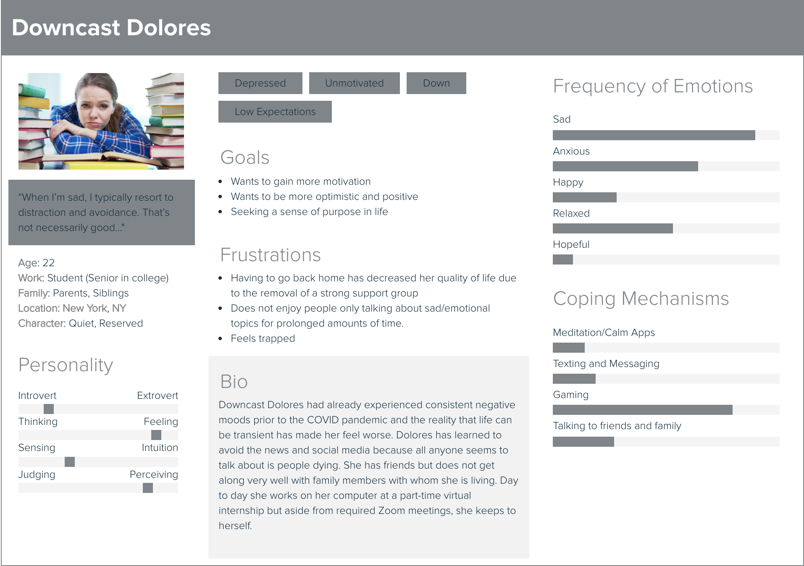
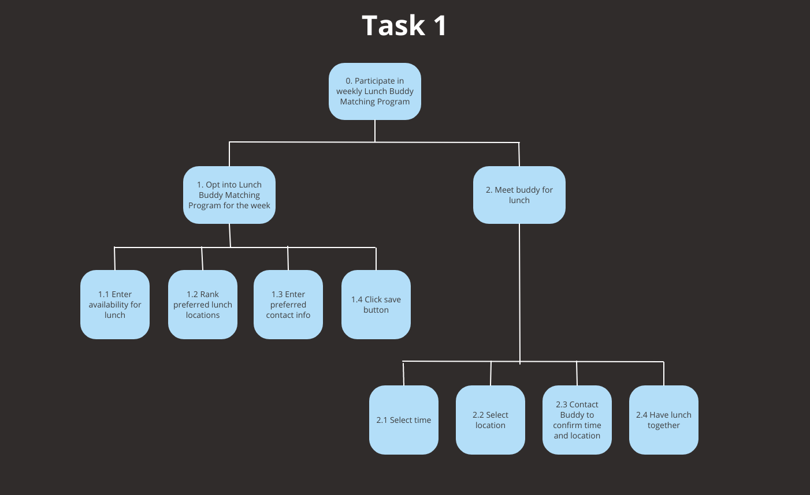
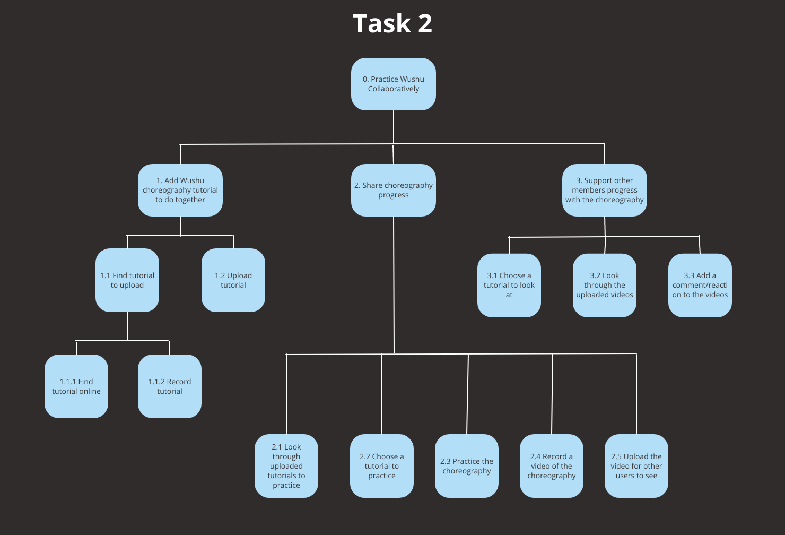
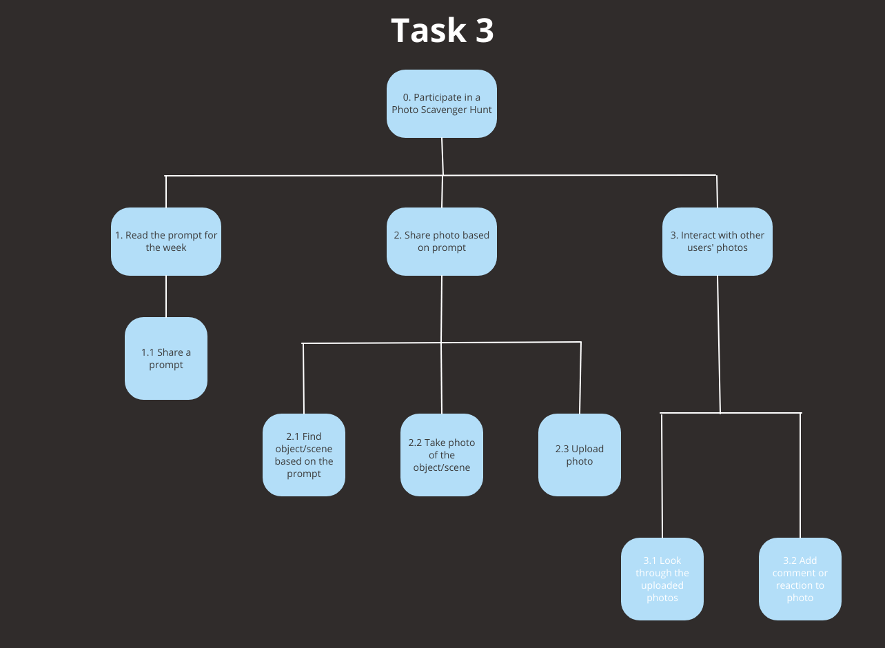

user analysis.
Part I: User Interviews
After identifying a user population (college students), we created an interview protocol to learn more about their
current experiences, feelings, and coping mechanisms.
These were the major takeaways from our interviewees:
Interviewee 1:
This interviewee felt that suddenly returning home from college was a big change. They did not feel
directly impacted by some of the current crisis situations but had not left the house at all since
returning months earlier even for walks or grocery shopping. They respond well to words of affirmation
and frequently talk to friends when sad. One insightful quote from this interviewee: “Today’s world is
like a shit show. All of these people are getting killed, there’s a pandemic, there are protests,
there’s looting...I mean there are good things and bad things to it...obviously people are out there
trying to make things right and make a change… [but] some people are taking advantage of the current
protests and looting, and thats really sad.”
Interviewee 2:
This interviewee was significantly emotionally impacted by COVID-19 and racial injustices going on.
The interviewee lost their job for two months because of COVID-19 and had been staying at home for a
long period of time. They rarely went out or saw their friends, so as a result, they felt “more down
and hopeless.” The interviewee expressed that they felt isolated because of COVID-19 and misses human
interaction. One insightful quote from this interviewee: "I feel kind of distrustful of the police,
and I also feel helpless because the police department is a huge institution, so I don't know how to
combat these issues myself......seeing the news all the time and the horrible things that are happening
makes me sad.”
Interviewee 3:
This interviewee is very active on their mobile phone and tends to resort to using technology to
cope with feelings of sadness. They lived at their parents’ home with their younger sibling and
often dealt with feelings of isolation due to the COVID-19 pandemic because they were not able to
leave home often and see other people as they normally would on their college campus. They estimated
that they consumed news and media related to the news about four hours per day. They definitely
felt an emotional impact due to the pandemic, current events, and news related to police violence.
One insightful quote from them: “I used to use a mood tracking app pretty regularly but I
stopped like two weeks ago because I felt I was going to keep having negative moods and so I didn’t
really see the point in logging it anymore.”
Part II: Personas
With insights from real members of our user population we created three personas:



Part III: Task Analysis
Next, we synthesized our understanding of our problem domain through task analysis of three processes:
Hierarchical Task Plan (Task 1):
Plan 0: Do task 1, task 2 is optional.
Plan 1: Do task 1.1, 1.2, 1.3, 1.4 in that order (1.3 is optional), repeat task 1.2 if desired
Plan 2: Do task 2.1 and 2.2 in that order

Hierarchical Task Plan (Task 2):
Plan 1: 1.1 - 1.2 - 1.3 (only do 1.2 if 1.1 is done)
Plan 1.1: Do task 1.1.1 and 1.1.2 in any order (they are optional, but recommended), and 1.1.2 can be done repeatedly
Plan 1.2: Do 1.2.1 and 1.2.2 in any order but 1.2.3 must come after 1.2.2 (1.2.1 can be done repeatedly)
Plan 1.3: 1.3.1 and 1.3.2 at the same time

Hierarchical Task Plan (Task 3):
Plan 0: Do 1 and 2 in that order
Plan 1: Do plan 1.1, 1.2, 1.3 in that order
Plan 1.3: 1.3.1 and 1.3.2 are optional; execute and repeat 1.3.1 and 1.3.2 in that order as needed
Plan 2: Do 2.1 first. 2.2 is optional.
